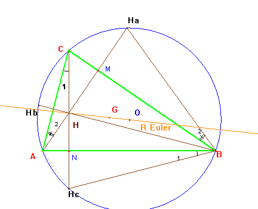
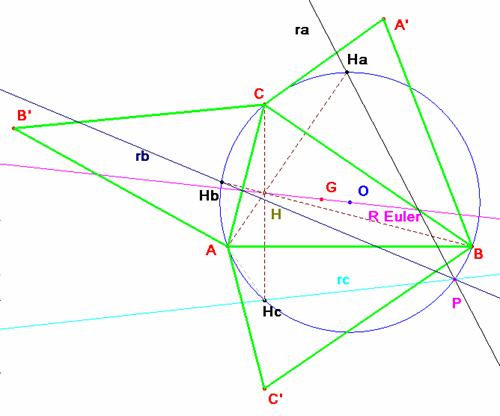

Propuesto
por David Benítez Mojica y
Nora Lucia Leija Mendoza, profesores de la
Universidad Autónoma de Coahuila (Méjico)
Problema 290.- Dado un triangulo ABC, se construyen los triángulos simétricos con respecto a cada uno de los lados del triángulo ABC . Las rectas de Euler trazadas en cada uno de estos triángulo se intersectan en un punto P. Además, el punto P y los ortocentros de los triángulos simétricos pertenecen a la circunferencia circunscrita en el triángulo ABC.
Benitez, D, Leija, N.L.
(2005): Comunicación personal.
Solución de Saturnino Campo Ruiz, profesor del IES Fray Luis de León de Salamanca.
Que los ortocentros
de los triángulos simétricos del ABC
están en la circunferencia circunscrita es inmediato. En el problema nº 166
demostramos que los simétricos de los ortocentros
respecto de los pies de cada altura están en esta circunferencia.
Hay otra propiedad que nos interesa para la resolución del problema.
Si llamamos Ha a la proyección del ortocentro H desde A sobre la c. circunscrita se verifica que el ángulo HaBHc es el doble del ángulo CBA. Basta observar en la figura adjunta cómo el ángulo en B es la suma de los ángulos etiquetados como 1 y 2: tienen como suplementario el mismo ángulo HaHHc.
En el triángulo AHC, áng(1) + áng(2)=180 – áng AHC.
En el cuadrilátero MHNB, áng B + áng HaHHc = 180.

En consecuencia, el arco capaz del segmento HaHc
y amplitud el doble del ángulo ABC es
el arco HaBHc de la circunferencia circunscrita.

Vamos a demostrar que las rectas
de Euler de los triángulos A’BC y AC’B se cortan en un punto P de la circunferencia circunscrita.
Es evidente que estas rectas, ra, rc
pasan por los puntos Ha y Hc
respectivamente.
Podemos suponer que de la recta ra se
pasa a la rc
componiendo una simetría respecto al lado a=BC
(que nos lleva a la recta de Euler de ABC) con otra simetría respecto al lado c=AB. El resultado de la composición de
dos simetrías axiales es un giro de centro el punto B de intersección de los ejes y ángulo el doble del formado por
ellos. Así pues, las rectas ra, rc que pasan por los puntos Ha y Hc, forman un ángulo
igual a dos veces el ángulo de las rectas a
y b. Su punto de intersección
estará situado en el arco capaz del segmento HaHc y
amplitud el doble del ángulo ABC, por
tanto, un punto P de la circunferencia
circunscrita.
Una
recta queda fija dando dos puntos, si ra, ha
de cortar a rb
en la c. circunscrita, este punto
es necesariamente P, ya que rb no
pasa por Ha. Y con esto se
concluye.